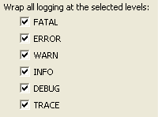
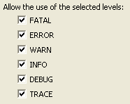

Audit - Rules - log4jDescriptionThis group contains audit rules that check for correct usage of the log4j logging framework. |
| Rules: |
Summary
Check that logging has been enabled before invoking the logging methods.
Description
This audit rule finds invocations of the Log4J logging methods that are not guarded by a check to ensure that the appropriate level of logging has been enabled. Invocations of the logging methods should be guarded to avoid computation of logging output when it isn't going to be reported.
Example
The following invocation of the debug method:
logger.debug("I never thought we'd get here!");
should be replaced by something like the following:
if (logger.isDebugEnabled()) {
logger.debug("I never thought we'd get here!");
}

Summary
Logging should be configured in a file.
Description
This rule find places where a Configurator is used to programatically configure a logger. Configuration of loggers should be done by including configuration information in a configuration file in order to make it easier to change.
Example
The following invocation would be flagged as a violation:
configurator.doConfigure(null, null);
Summary
Only those log levels that are allowed should be used.
Description
This audit rule checks for used of log levels that are not allowed.
Example
If the rule were configured to not allow the use of the ALL level, the following invocation would be flagged as a violation:
logger.log(Level.ALL, "This will always be logged");
